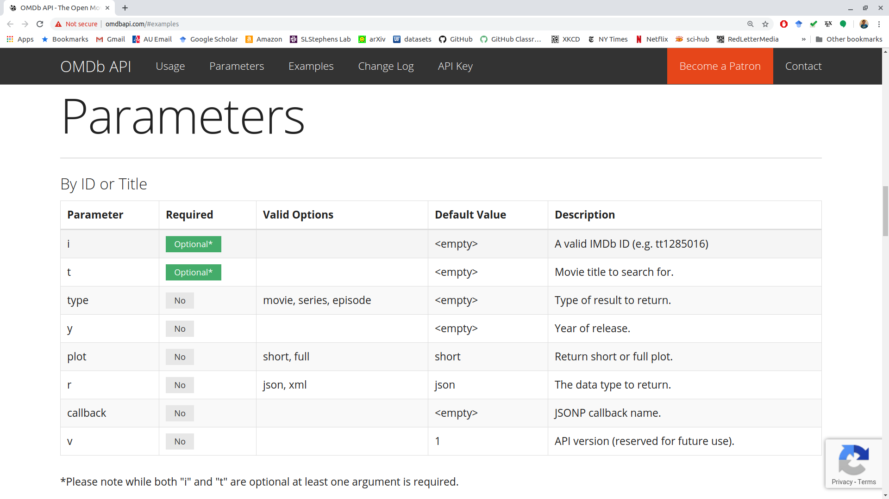

library(tidyverse)Getting Data Through APIs
Learning Objectives
Data on the Web
There are at least 4 ways people download data on the web:
- Click to download a csv/xls/txt file.
- Use a package that interacts with an API.
- Use an API directly.
- Scrape from directly from the HTML file.
We know how to do 1.
This lesson is about doing 2 and 3.
Let’s load the tidyverse:
R Package API Wrappers
API: Application Programming Interface
- A description of how you can request data from a particular software, and a description of what type of response you get after the request.
- Usually, the data you get back are XML or JSON files.
- API’s are an abstraction and can be implemented in many languages.
- Think of it like a user interface for a computer program. You click a button and expect the user interface to do something. An API let’s a program click a metaphorical “button” and expect to get something back.
- There are lots of free and public APIs: https://github.com/public-apis/public-apis
Many of the most popular databases/websites have an R package that wraps the API through R functions.
- I.e.: You can use an R function to request data.
If an R package exists for an API, you should use it.
Examples:
tidycensus: U.S. Census data API.
gh: GitHub API.
wbstats: World Bank data.
rebird: Ebird dataset for bird sitings.
geonames: Dataset containing unique names for geographic locations.
WikipediR: Wikipedia API:
Each package will be entirely unique, and you have to read its documentation to know how to download data. So we won’t cover any of them.
Use API’s directly with httr2
The goal of this section is not to provide a comprehensive lesson on HTTP and extracting data using API’s. Rather, this is just to point you to some resources and give you some examples.
Each API is different, and so you’ll always have to figure out how to interact with a new API.
API’s always have documentation on what parameters you can send, how you can send them, and what data you would get back based on the values of those parameters.
E.g.: OMDB (an open-source version of IMDB) has a simple API http://www.omdbapi.com/
Authentication
Some API’s are public and you just have at them (though, be congnizent that you are not making too many requests).
Others require authentication to access the API.
There are three ways that apps authenticate, from easiest to hardest:
- Using “basic” authentication
- Using an API key, and
- Using OAuth.
Basic Authentication
“Basic” authentication, where you just provide a username and password. The basic syntax for this is:
req_auth_basic(req, username, password)You should already have a username and password set up.
I would suggest keeping your password secure using your .Renviron file or via
{keyring}(see below).
API keys
An API key is a string that you add to your request.
To obtain a free key from OMDB and access it in R:
Sign up for a free key: https://www.omdbapi.com/apikey.aspx
Open up your .Renviron file using the usethis package.
library(usethis) edit_r_environ()Add the key OMDB sent you by email to the .Renviron package. You can call it
OMDB_API_KEY, for example. In which case you would write the following in .Renviron:OMDB_API_KEY = <your-private-key>Where “
<your-private-key>” is the private key OMDB sent you by email.Restart R.
You can now always access your private key by
movie_key <- Sys.getenv("OMDB_API_KEY")You typically put your API key as a query parameter via
req_url_query()(see below)
It is important to never save or display your private key in a file you could share. You are responsible for all behavior associated with your key. That is why we saved it to our .Renviron and are only accessing it secretly through
Sys.getenv().It is still not great that your key is in a plain text environment. You can add a layer of security by using the keyring package: https://github.com/r-lib/keyring
library(keyring) key_set("OMDB_API_KEY_SECURE") ## do this once to save the key movie_key_2 <- key_get("OMDB_API_KEY_SECURE") ## do this each time you need the keyA person with access to your computer who knows R and the keyring package could still get to your key. But it is more secure than placing your key in a plain text file (which is what .Renviron is). There are more secure ways to access keys in R.
OAuth:
See OAuth from
{httr2}for details.OAuth (“Open Authorization”) is an open standard for authorization that allows users to securely access resources without giving away their login credentials.
The idea is that your software asks the user if it can use the user’s authorization to access the API.
- It does this each time it needs to access the API.
- This is commonly used in big API’s, like that of Google, Twitter, or Facebook.
As an example, we will consider the GitHub API.
“Register an application” with the API provider before you can access the API.
You do this by creating a developer account on the API’s website, then registering a new OAuth app.
You won’t actually have an app, but API developers use this word for any means where you ask to use a user’s authorization.
This typically involves providing a name and a callback URL (typically http://localhost:1410) for your “application”.
For GitHub:
Register at https://github.com/settings/developers
Use any URL (like https://github.com/) as your homepage URL
Use http://localhost:1410 as the callback url.
The provider will then give you a
client_idand aclient_secretthat you will need to use.Neither of these need to be protected like a password since the user will provide their own password/username for authentication.
For GitHub:
You can find these here: https://github.com/settings/developers
Click on your OAuth app.
Obtain a “token URL”, which is sometimes called an “access URL”.
This can be found somewhere in the API docs, but you have to read them carefully.
For GitHub:
- The access URL is https://github.com/login/oauth/access_token
Use
oauth_client()to create a client. You feed in theclient_id, theclient_secret, thetoeken_url, and any name you choose into it.client <- oauth_client( id = "client_id", secret = "client_secret", token_url = "token_url", name = "personal_app_name" )For GitHub:
client <- oauth_client( id = "933ffc6f53e466c58aa1", secret = "aa02ef46f93aa51a360f23f30f7640b445118e7f", token_url = "https://github.com/login/oauth/access_token", name = "gitapp" )
You get an “authorization URL”.
- This again can be found somewhere in the docs.
- For GitHub:
The autorization URL is: https://github.com/login/oauth/authorize
auth_url <- "https://github.com/login/oauth/authorize"
Feed the authorization URL and the client into
req_oauth_auth_code()during a request.request("https://api.github.com/user") |> req_oauth_auth_code(client = client, auth_url = auth_url) |> req_perform() -> gout gout
There are sometimes other “flows” for OAuth that require different steps. See here for details: https://httr2.r-lib.org/articles/oauth.html
When using OAuth in a package, folks often (i) “cache” the token securely (because the generated token should be kept private), and (ii) ask folks to generate their own app.
Caching is easy. Just set
cache_disk = TRUEinreq_oauth_auth_code().- Note that this creates some security risks since the token will be saved on the disk.
- So you should inform the user if you do this.
When you ask folks to generate their own app, then you should have
client_idandclient_secretas arguments that the user can provide.
httr2
Most API’s on the web use HTTP (Hyper-Text Transfer Protocol). It’s a language for querying and obtaining data.
We won’t learn HTTP, but we will use R’s interface for HTTP through the
{httr2}package.library(httr2)To request data from a API, you typically take these steps:
- Create a request with a base URL via
request(). - Modify this request by some or all of the following:
- Modifying the endpoint URL with
req_url_path_append(). - Adding Queries to the URL with
req_url_query(). - Adding Headers to the request with
req_headers(). - Adding OAuath via
req_oauth_auth_code() - Specify the HTTP method with
req_method()GETwill fetch data.- This is the default, so typically you don’t need to specify it explicitly.
PUTwill add stuff to the target.DELETEwill delete stuff at the target.- etc…
- Modifying the endpoint URL with
- You should eyeball the http request via
req_dry_run()and check that it is correct. - Send the request with
req_perform().
- Create a request with a base URL via
Some API’s only modify the URL path, some only modify the query, some require headers. Let’s go through each of these in turn.
URL Path
Every API has a base URL that you modify.
Some API’s only modify the URL path to obtain the endpoint.
Consider the Wizard World API
The documentation says that the base URL is “https://wizard-world-api.herokuapp.com”.
baseurl <- "https://wizard-world-api.herokuapp.com"Let’s start a request with this baseurl via
request().wizreq <- request(baseurl)The documentation just says that we modify this URL to obtain the different objects. - E.g., to obtain a list of all elixirs that occur in Harry Potter, we just add “Elixirs” at the end.
- We can do this to our request with
req_url_path_append()
wizreq <- req_url_path_append(wizreq, "Elixirs") wizreq<httr2_request> GET https://wizard-world-api.herokuapp.com/Elixirs Body: empty- We can do this to our request with
Let’s look at the http request
req_dry_run(wizreq)GET /Elixirs HTTP/1.1 accept: */* accept-encoding: deflate, gzip host: wizard-world-api.herokuapp.com user-agent: httr2/1.2.1 r-curl/7.0.0 libcurl/8.14.1We then implement this request via
req_perform().eout <- req_perform(wizreq) eout<httr2_response> GET https://wizard-world-api.herokuapp.com/Elixirs Status: 200 OK Content-Type: application/json Body: In memory (62284 bytes)We would then clean this output (see rectangling below). But as a preview, we would do
tibble(elixir = resp_body_json(resp = eout)) |> unnest_wider(col = elixir)# A tibble: 145 × 10 id name effect sideEffects characteristics time difficulty ingredients <chr> <chr> <chr> <chr> <chr> <chr> <chr> <list> 1 0106fb… Ferg… Treat… Potential … <NA> <NA> Unknown <list [3]> 2 021b40… Mane… Rapid… <NA> <NA> <NA> Unknown <NULL> 3 024f56… Poti… <NA> <NA> <NA> <NA> Unknown <NULL> 4 06beea… Rudi… Helps… <NA> <NA> <NA> Unknown <list [2]> 5 078b53… Lung… Most … <NA> <NA> <NA> Unknown <NULL> 6 07944d… Esse… Menta… <NA> Green in colour <NA> Advanced <list [2]> 7 0dd8d2… Anti… Cures… <NA> Green in colour <NA> Moderate <list [4]> 8 0e2240… Rest… Rever… <NA> Purple coloured <NA> Unknown <NULL> 9 0e7228… Skel… Resto… <NA> Smokes when po… <NA> Moderate <list [6]> 10 0e7f89… Chee… <NA> <NA> Yellow in colo… <NA> Advanced <list [1]> # ℹ 135 more rows # ℹ 2 more variables: inventors <list>, manufacturer <chr>
Queries
Some APIs require you to modify the URL via queries. Queries occur after a question mark and are of the form
http://www.url.com/?query1=arg1&query2=ar2&query3=arg3The OMDB API requires you to provide queries. The documentation says
Send all data requests to: http://www.omdbapi.com/?apikey=[yourkey]&
But that documentation already has a query as a part of it (apikey=[yourkey]).
You add queries via
req_url_query().- You provide it with name/value paires.
The documentation for OMDB has a table called “Parameters”, where they list the possible queries.
Let’s fetch information on the film The Lighthouse, obtaining a short plot in json format.
This is what the URL looks like without my API key:
movie_key <- Sys.getenv("OMDB_API_KEY") request("http://www.omdbapi.com/") |> req_url_query(t = "The Lighthouse", plot = "short", r = "json") -> movie_req movie_req<httr2_request> GET http://www.omdbapi.com/?t=The%20Lighthouse&plot=short&r=json Body: emptyLet’s add our API key and perform the request.
movie_req |> req_url_query(apikey = movie_key) |> req_perform() -> moutOutput is just a list:
resp_body_json(mout) |> str()List of 25 $ Title : chr "The Lighthouse" $ Year : chr "2019" $ Rated : chr "R" $ Released : chr "01 Nov 2019" $ Runtime : chr "109 min" $ Genre : chr "Drama, Fantasy, Horror" $ Director : chr "Robert Eggers" $ Writer : chr "Robert Eggers, Max Eggers" $ Actors : chr "Robert Pattinson, Willem Dafoe, Valeriia Karaman" $ Plot : chr "Two lighthouse keepers try to maintain their sanity while living on a remote and mysterious New England island in the 1890s." $ Language : chr "English" $ Country : chr "Canada, United States" $ Awards : chr "Nominated for 1 Oscar. 34 wins & 139 nominations total" $ Poster : chr "https://m.media-amazon.com/images/M/MV5BMTI4MjFhMjAtNmQxYi00N2IxLWJjMGEtYWY1YmU3OTQ0Zjk3XkEyXkFqcGc@._V1_SX300.jpg" $ Ratings :List of 3 ..$ :List of 2 .. ..$ Source: chr "Internet Movie Database" .. ..$ Value : chr "7.4/10" ..$ :List of 2 .. ..$ Source: chr "Rotten Tomatoes" .. ..$ Value : chr "90%" ..$ :List of 2 .. ..$ Source: chr "Metacritic" .. ..$ Value : chr "83/100" $ Metascore : chr "83" $ imdbRating: chr "7.4" $ imdbVotes : chr "289,256" $ imdbID : chr "tt7984734" $ Type : chr "movie" $ DVD : chr "N/A" $ BoxOffice : chr "$10,867,104" $ Production: chr "N/A" $ Website : chr "N/A" $ Response : chr "True"In the API documentation:

Headers
Headers supply additional options for the return type.
Common headers are described by Wikipedia: https://en.wikipedia.org/wiki/List_of_HTTP_header_fields
You supply headers to a request via
req_headers().Consider the icanhazdadjoke API. One option is to include a header to specify plain text returns, rather than JSON returns.
request("https://icanhazdadjoke.com/") |> req_headers(Accept = "text/plain") |> req_perform() -> dadout dadout resp_body_string(dadout)This is different than a JSON output
request("https://icanhazdadjoke.com/") |> req_perform() -> dadout2 resp_body_string(dadout2)
Output:
Functions that work with the response are all of the form
resp_*().The status code describes whether your request was successful.
List of codes: https://http.cat/
Use
resp_status()to get the code for our request:resp_status(mout)[1] 200
Headers provide infromation on the request. Use the
resp_headers()function to see what headers we got in our request.resp_headers(mout)The body contains the data you are probably most interested in. Use the
resp_body_*()functions to access the body:resp_body_json(mout)Background: The body typically comes in the form of either a JSON or XML data structure.
- For JSON, you use
resp_body_json() - For XML you use
resp_body_xml() - You can see the unparsed output with
resp_body_string()
resp_body_string(mout)[1] "{\"Title\":\"The Lighthouse\",\"Year\":\"2019\",\"Rated\":\"R\",\"Released\":\"01 Nov 2019\",\"Runtime\":\"109 min\",\"Genre\":\"Drama, Fantasy, Horror\",\"Director\":\"Robert Eggers\",\"Writer\":\"Robert Eggers, Max Eggers\",\"Actors\":\"Robert Pattinson, Willem Dafoe, Valeriia Karaman\",\"Plot\":\"Two lighthouse keepers try to maintain their sanity while living on a remote and mysterious New England island in the 1890s.\",\"Language\":\"English\",\"Country\":\"Canada, United States\",\"Awards\":\"Nominated for 1 Oscar. 34 wins & 139 nominations total\",\"Poster\":\"https://m.media-amazon.com/images/M/MV5BMTI4MjFhMjAtNmQxYi00N2IxLWJjMGEtYWY1YmU3OTQ0Zjk3XkEyXkFqcGc@._V1_SX300.jpg\",\"Ratings\":[{\"Source\":\"Internet Movie Database\",\"Value\":\"7.4/10\"},{\"Source\":\"Rotten Tomatoes\",\"Value\":\"90%\"},{\"Source\":\"Metacritic\",\"Value\":\"83/100\"}],\"Metascore\":\"83\",\"imdbRating\":\"7.4\",\"imdbVotes\":\"289,256\",\"imdbID\":\"tt7984734\",\"Type\":\"movie\",\"DVD\":\"N/A\",\"BoxOffice\":\"$10,867,104\",\"Production\":\"N/A\",\"Website\":\"N/A\",\"Response\":\"True\"}"- For JSON, you use
resp_header("content-type")will often tell you the type of body output.resp_header(mout, "content-type")[1] "application/json; charset=utf-8"resp_header(eout, "content-type")[1] "application/json; charset=utf-8"
Rectangling
The format for the data you typically get from an API is a list of lists.
The
repurrrsivepackage contains a few examples.library(repurrrsive)The dataset
gh_userscontains information from 6 users, obtained using GitHub’s API: https://developer.github.com/v3/users/#get-a-single-userdata("gh_users") typeof(gh_users)[1] "list"length(gh_users)[1] 6names(gh_users[[1]])[1] "login" "id" "avatar_url" [4] "gravatar_id" "url" "html_url" [7] "followers_url" "following_url" "gists_url" [10] "starred_url" "subscriptions_url" "organizations_url" [13] "repos_url" "events_url" "received_events_url" [16] "type" "site_admin" "name" [19] "company" "blog" "location" [22] "email" "hireable" "bio" [25] "public_repos" "public_gists" "followers" [28] "following" "created_at" "updated_at"There are a few functions from
tidyrpackage that can be used to “unnest” a list into a data frame.unnest_wider(): Each list element becomes its own columnhoist(): Similar asunnest_wider(), but you can choose what elements to extract to their own columns.unnest_longer(): Each list element becomes its own row.
Because this is the tidyverse, your list needs to be a column in a data frame:
df <- tibble(users = gh_users) df# A tibble: 6 × 1 users <list> 1 <named list [30]> 2 <named list [30]> 3 <named list [30]> 4 <named list [30]> 5 <named list [30]> 6 <named list [30]>In which case, you can consider the unnest functions via:
unnest_wider()preserves the rows, but changes the columns.unnest_longer()preserves the columns, but changes the rows
Use
unnest_wider()to make each of those list elements their own column.unnest_wider(df, users)# A tibble: 6 × 30 login id avatar_url gravatar_id url html_url followers_url following_url <chr> <int> <chr> <chr> <chr> <chr> <chr> <chr> 1 gabo… 6.60e5 https://a… "" http… https:/… https://api.… https://api.… 2 jenn… 5.99e5 https://a… "" http… https:/… https://api.… https://api.… 3 jtle… 1.57e6 https://a… "" http… https:/… https://api.… https://api.… 4 juli… 1.25e7 https://a… "" http… https:/… https://api.… https://api.… 5 leep… 3.51e6 https://a… "" http… https:/… https://api.… https://api.… 6 masa… 8.36e6 https://a… "" http… https:/… https://api.… https://api.… # ℹ 22 more variables: gists_url <chr>, starred_url <chr>, # subscriptions_url <chr>, organizations_url <chr>, repos_url <chr>, # events_url <chr>, received_events_url <chr>, type <chr>, site_admin <lgl>, # name <chr>, company <chr>, blog <chr>, location <chr>, email <chr>, # hireable <lgl>, bio <chr>, public_repos <int>, public_gists <int>, # followers <int>, following <int>, created_at <chr>, updated_at <chr>Graphic:
Use
hoist()to only extract some elements of a list:df2 <- hoist(df, users, login = "login", followers = "followers") df2# A tibble: 6 × 3 login followers users <chr> <int> <list> 1 gaborcsardi 303 <named list [28]> 2 jennybc 780 <named list [28]> 3 jtleek 3958 <named list [28]> 4 juliasilge 115 <named list [28]> 5 leeper 213 <named list [28]> 6 masalmon 34 <named list [28]>Notice that the new data frame still has a list column, but each each list now only has 28 elements instead of 30. That’s because
hoist()has removed theloginandfollowerselements from each list in the list column.df2$users[[1]]["login"]$<NA> NULLdf2$users[[1]]["followers"]$<NA> NULLGraphic:

Let’s look at the list
gh_repos, which was also obtained using the GitHub API: https://developer.github.com/v3/repos/#list-user-repositoriesdata("gh_repos") typeof(gh_repos)[1] "list"length(gh_repos)[1] 6df <- tibble(repo = gh_repos) df# A tibble: 6 × 1 repo <list> 1 <list [30]> 2 <list [30]> 3 <list [30]> 4 <list [26]> 5 <list [30]> 6 <list [30]>This list is very complicated!

Ideally, each repo would be its own row (since the repositories are the observational units). We can do this with
unnest_longer().df2 <- unnest_longer(df, repo) df2# A tibble: 176 × 1 repo <list> 1 <named list [68]> 2 <named list [68]> 3 <named list [68]> 4 <named list [68]> 5 <named list [68]> 6 <named list [68]> 7 <named list [68]> 8 <named list [68]> 9 <named list [68]> 10 <named list [68]> # ℹ 166 more rowsGraphic:

We can then use
unnest_wider()orhoist()on this new data frame to get a tidy dataset.df3 <- unnest_wider(df2, repo) df3# A tibble: 176 × 68 id name full_name owner private html_url description fork url <int> <chr> <chr> <list> <lgl> <chr> <chr> <lgl> <chr> 1 6.12e7 after gaborcsa… <named list> FALSE https:/… Run Code i… FALSE http… 2 4.05e7 argu… gaborcsa… <named list> FALSE https:/… Declarativ… FALSE http… 3 3.64e7 ask gaborcsa… <named list> FALSE https:/… Friendly C… FALSE http… 4 3.49e7 base… gaborcsa… <named list> FALSE https:/… Do we get … FALSE http… 5 6.16e7 cite… gaborcsa… <named list> FALSE https:/… Test R pac… TRUE http… 6 3.39e7 clis… gaborcsa… <named list> FALSE https:/… Unicode sy… FALSE http… 7 3.72e7 cmak… gaborcsa… <named list> FALSE https:/… port of cm… TRUE http… 8 6.80e7 cmark gaborcsa… <named list> FALSE https:/… CommonMark… TRUE http… 9 6.32e7 cond… gaborcsa… <named list> FALSE https:/… <NA> TRUE http… 10 2.43e7 cray… gaborcsa… <named list> FALSE https:/… R package … FALSE http… # ℹ 166 more rows # ℹ 59 more variables: forks_url <chr>, keys_url <chr>, # collaborators_url <chr>, teams_url <chr>, hooks_url <chr>, # issue_events_url <chr>, events_url <chr>, assignees_url <chr>, # branches_url <chr>, tags_url <chr>, blobs_url <chr>, git_tags_url <chr>, # git_refs_url <chr>, trees_url <chr>, statuses_url <chr>, # languages_url <chr>, stargazers_url <chr>, contributors_url <chr>, …Graphic:

Exercise: Clean up the
sw_peoplelist from therepurrrsivepackage:library(repurrrsive) data("sw_people")Exercise: Clean up the
got_charslist from therepurrrsivepackagelibrary(repurrrsive) data("got_chars")
NASA Exercise
Consider the NASA API
Generate an API key and save it as
NASA_API_KEYin your R environment file.Read about the APOD API and obtain all images from January of 2022.
Clean the output into a data frame, like this:
# A tibble: 31 × 8 copyright date explanation hdurl media_type service_version title url <chr> <chr> <chr> <chr> <chr> <chr> <chr> <chr> 1 "Soumyadeep M… 2022… very Full … http… image v1 The … http… 2 "\nDani Caxet… 2022… Sometimes … http… image v1 Quad… http… 3 "\nJan Hatten… 2022… You couldn… http… image v1 Come… http… 4 <NA> 2022… What's hap… http… image v1 Moon… http… 5 "\nLuca Vanze… 2022… Does the S… http… image v1 A Ye… http… 6 "Tamas Ladany… 2022… That's not… http… image v1 The … http… 7 "Point Blue C… 2022… A male Ade… http… image v1 Ecst… http… 8 "Cheng Luo" 2022… Named for … http… image v1 Quad… http… 9 <NA> 2022… What will … http… image v1 Hubb… http… 10 <NA> 2022… Why does C… <NA> video v1 Come… http… # ℹ 21 more rows